Objective
Backend Engineer (Rust) | 3+ Years in Infrastructure & Web Systems (TiKV, Couchbase, WASM) | Based in Melbourne | Actively Exploring AI & Web3 Opportunities
Skills
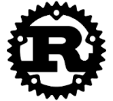
Rust

JavaScript
Node.js
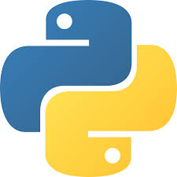
Python
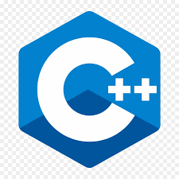
C++

MySQL
Couchbase
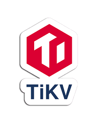
TiKV
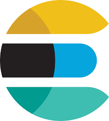
Elasticsearch
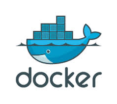
Docker
GitHub
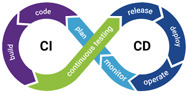
CI/CD
Kafka
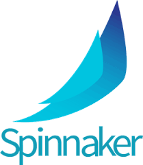
Spinnaker
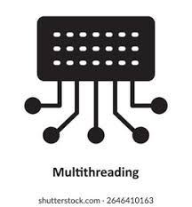
Multithreading
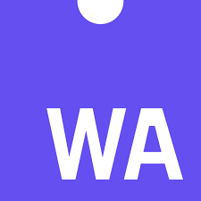
WASM
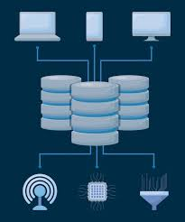
Distributed Systems
Backend APIs
Embedded systems
Web3
Leadership
Collaboration
Time Management
Critical Thinking
Communication
Experience
-
Senior Software Developer | May 2024 – Present
- Led backend development of internal tools and CRM systems using Rust.
- Mentored 6+ interns and juniors, conducted technical evaluations for new hires.
- Designed and maintained internal services like Software Management, Audit, QM Issue systems.
- Conducted regular code reviews and enforced quality standards.
- Built SSD disk monitoring services integrated with Kibana.
-
Software Developer | Aug 2023 – May 2024
- Designed backend task allocation and response team systems.
- Built data import tools to sync MySQL into Couchbase and TiKV.
- Developed backend features for user and task management modules.
- Ensured secure API integrations and reliable data flow.
-
Junior Software Developer | May 2022 – Aug 2023
- Developed Rust + WASM tools to manipulate PDFs and generate SVGs.
- Supported feature development, unit testing, and documentation.
-
Internship Trainee | Jan 2022 – Apr 2022
- Trained in modern backend development with Rust and Node.js.
- Gained exposure to debugging tasks under team guidance.
Projects
Certificates
- Certified Info Security & Ethical Hacker, 2019
- Programming for Everybody (Python), 2023
- JavaScript Algorithms & Data Structures, 2023
- Agile Project Management, 2023
- DevOps Foundations, 2024